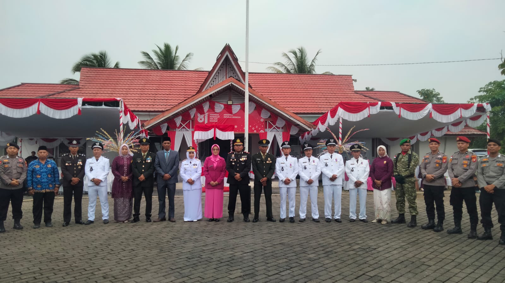
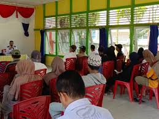
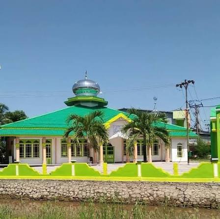

Berita & Informasi Desa
Kegiatan masyarakat, pengumuman, dan informasi terbaru Desa Semparuk.
Kegiatan masyarakat, pengumuman, dan informasi terbaru Desa Semparuk.

25 Agustus 2026
Musim panen menjadi momen penting bagi masyarakat Desa Semparuk yang mayoritas bekerja sebagai petani.
Informasi kegiatan dan pelayanan masyarakat Desa Semparuk.
25 Agustus 2026 • Musim panen menjadi momen penting bagi para petani Desa Semparuk.

28 Agustus 2026 • Warga bergotong royong menjaga kebersihan lingkungan dan parit desa.

18 Agustus 2026 • Peringati HUT RI Ke 81, Kapolsek Semparuk Jadi Inspektur Upacara Penurunan Bendera Di Kantor Camat Semparuk

20 Agustus 2026 • Pembahasan program pembangunan bersama masyarakat Desa Semparuk.

12 Agustus 2026 • Kelompok tani mulai mempersiapkan lahan persawahan menjelang musim tanam.

8 Agustus 2026 • Seluruh warga diundang mengikuti kerja bakti pada hari Minggu pagi.